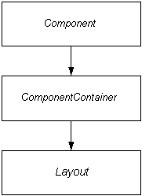

|
||||||||||
| PREV PACKAGE NEXT PACKAGE | FRAMES NO FRAMES | |||||||||
See:
Description
| Interface Summary | |
|---|---|
| AbstractColorPicker.Coordinates2Color | Interface for converting 2d-coordinates to a Color |
| AbstractSelect.Filtering | Interface for option filtering, used to filter options based on user entered value. |
| AbstractSelect.ItemDescriptionGenerator | Implement this interface and pass it to Tree.setItemDescriptionGenerator or Table.setItemDescriptionGenerator to generate mouse over descriptions ("tooltips") for the rows and cells in Table or for the items in Tree. |
| AbstractSelect.NewItemHandler | |
| AbstractSplitPanel.SplitterClickListener | SplitterClickListener interface for listening for
SplitterClickEvent fired by a SplitPanel. |
| Button.ClickListener | Interface for listening for a Button.ClickEvent fired by a
Component. |
| Component | Component is the top-level interface that is and must be implemented
by all Vaadin components. |
| Component.Focusable | A sub-interface implemented by components that can obtain input focus. |
| Component.Listener | Listener interface for receiving Component.Events. |
| ComponentContainer | A special type of parent which allows the user to add and remove components to it. |
| Field<T> | TODO document |
| FormFieldFactory | Deprecated. As of 7.0, use FieldGroup instead of Form for
more flexibility. |
| HasComponents | Interface that must be implemented by all Components that contain
other Components. |
| HasComponents.ComponentAttachDetachNotifier | Interface for HasComponents implementations that support sending
attach and detach events for components. |
| HasComponents.ComponentAttachListener | Component attach listener interface. |
| HasComponents.ComponentDetachListener | Component detach listener interface. |
| JavaScript.JavaScriptCallbackRpc | |
| JavaScriptFunction | Defines a method that is called by a client-side JavaScript function. |
| Layout | Extension to the ComponentContainer interface which adds the
layouting control to the elements in the container. |
| Layout.AlignmentHandler | AlignmentHandler is most commonly an advanced Layout that can
align its components. |
| Layout.MarginHandler | This type of layout supports automatic addition of margins (space around its components). |
| Layout.SpacingHandler | This type of layout supports automatic addition of space between its components. |
| LegacyComponent | Deprecated. As of 7.0. |
| LoadingIndicatorConfiguration | Provides method for configuring the loading indicator. |
| LoginForm.LoginListener | Login listener is a class capable to listen LoginEvents sent from LoginBox |
| MenuBar.Command | This interface contains the layer for menu commands of the
MenuBar class. |
| PopupView.Content | Used to deliver customized content-packages to the PopupView. |
| PopupView.PopupVisibilityListener | Defines a listener that can receive a PopupVisibilityEvent when the visibility of the popup changes. |
| PushConfiguration | Provides method for configuring the push channel. |
| SelectiveRenderer | Interface implemented by HasComponents implementors that wish to
dynamically be able to prevent given child components from reaching the
client side. |
| SingleComponentContainer | Interface for component containers that have one child component and do not support adding or removing components. |
| Table.CellStyleGenerator | Allow to define specific style on cells (and rows) contents. |
| Table.ColumnGenerator | Used to create "generated columns"; columns that exist only in the Table, not in the underlying Container. |
| Table.ColumnReorderListener | Interface for listening to column reorder events. |
| Table.ColumnResizeListener | Interface for listening to column resize events. |
| Table.FooterClickListener | Interface for the listener for column footer mouse click events. |
| Table.HeaderClickListener | Interface for the listener for column header mouse click events. |
| Table.RowGenerator | Row generators can be used to replace certain items in a table with a generated string. |
| TableFieldFactory | Factory interface for creating new Field-instances based on Container (datasource), item id, property id and uiContext (the component responsible for displaying fields). |
| TabSheet.CloseHandler | CloseHandler is used to process tab closing events. |
| TabSheet.SelectedTabChangeListener | Selected tab change event listener. |
| TabSheet.Tab | Tab meta-data for a component in a TabSheet. |
| TooltipConfiguration | Provides method for configuring the tooltip. |
| Tree.CollapseListener | Collapse event listener. |
| Tree.ExpandListener | Expand event listener. |
| Tree.ItemStyleGenerator | ItemStyleGenerator can be used to add custom styles to tree items. |
| Upload.FailedListener | Receives events when the uploads are finished, but unsuccessful. |
| Upload.FinishedListener | Receives the events when the uploads are ready. |
| Upload.ProgressListener | ProgressListener receives events to track progress of upload. |
| Upload.Receiver | Interface that must be implemented by the upload receivers to provide the Upload component an output stream to write the uploaded data. |
| Upload.StartedListener | Receives the events when the upload starts. |
| Upload.SucceededListener | Receives events when the uploads are successfully finished. |
| Window.CloseListener | An interface used for listening to Window close events. |
| Window.ResizeListener | Listener for window resize events. |
| Window.WindowModeChangeListener | An interface used for listening to Window maximize / restore events. |
| Class Summary | |
|---|---|
| AbsoluteLayout | AbsoluteLayout is a layout implementation that mimics html absolute positioning. |
| AbstractColorPicker | An abstract class that defines default implementation for a color picker component. |
| AbstractComponent | An abstract class that defines default implementation for the
Component interface. |
| AbstractComponentContainer | Extension to AbstractComponent that defines the default
implementation for the methods in ComponentContainer. |
| AbstractEmbedded | Abstract base for embedding components. |
| AbstractField<T> | Abstract field component for implementing buffered property editors. |
| AbstractField.FocusShortcut | A ready-made ShortcutListener that focuses the given
Focusable (usually a Field) when the keyboard shortcut is
invoked. |
| AbstractField.ReadOnlyStatusChangeEvent | An Event object specifying the Property whose read-only
status has changed. |
| AbstractJavaScriptComponent | Base class for Components with all client-side logic implemented using JavaScript. |
| AbstractLayout | An abstract class that defines default implementation for the Layout
interface. |
| AbstractMedia | Abstract base class for the HTML5 media components. |
| AbstractOrderedLayout | |
| AbstractSelect | A class representing a selection of items the user has selected in a UI. |
| AbstractSelect.AcceptItem | This criterion accepts a only a Transferable that contains given
Item (practically its identifier) from a specific AbstractSelect. |
| AbstractSelect.TargetItemIs | Criterion which accepts a drop only if the drop target is (one of) the given Item identifier(s). |
| AbstractSelect.VerticalLocationIs | An accept criterion to accept drops only on a specific vertical location of an item. |
| AbstractSingleComponentContainer | Abstract base class for component containers that have only one child component. |
| AbstractSplitPanel | AbstractSplitPanel. |
| AbstractSplitPanel.SplitterClickEvent | |
| AbstractTextField | |
| AbstractTextField.TextChangeEventImpl | |
| Accordion | An accordion is a component similar to a TabSheet, but with a
vertical orientation and the selected component presented between tabs. |
| Alignment | Class containing information about alignment of a component. |
| Audio | The Audio component translates into an HTML5 <audio> element and as such is only supported in browsers that support HTML5 media markup. |
| BrowserFrame | A component displaying an embedded web page. |
| Button | A generic button component. |
| Button.ClickEvent | Click event. |
| Button.ClickShortcut | A ShortcutListener specifically made to define a keyboard
shortcut that invokes a click on the given button. |
| Calendar | Vaadin Calendar is for visualizing events in a calendar. |
| CheckBox | |
| ColorPicker | A class that defines default (button-like) implementation for a color picker component. |
| ColorPickerArea | A class that defines area-like implementation for a color picker component. |
| ComboBox | A filtering dropdown single-select. |
| Component.ErrorEvent | Class of all component originated error events. |
| Component.Event | Superclass of all component originated events. |
| ConnectorTracker | A class which takes care of book keeping of ClientConnectors for a
UI. |
| CssLayout | CssLayout is a layout component that can be used in browser environment only. |
| CustomComponent | Custom component provides a simple implementation of the Component
interface to allow creating new UI components by composition of existing
server-side components. |
| CustomField<T> | A Field whose UI content can be constructed by the user, enabling the
creation of e.g. |
| CustomLayout | A container component with freely designed layout and style. |
| DateField |
A date editor component that can be bound to any Property that is
compatible with java.util.Date. |
| DefaultFieldFactory | This class contains a basic implementation for both FormFieldFactory
and TableFieldFactory. |
| DragAndDropWrapper | |
| Embedded | A component for embedding external objects. |
| Field.ValueChangeEvent | An Event object specifying the Field whose value has been
changed. |
| Flash | A component for displaying Adobe® Flash® content. |
| Form | Deprecated. As of 7.0, use FieldGroup instead of Form for
more flexibility. |
| FormLayout | FormLayout is used by Form to layout fields. |
| GridLayout | A layout where the components are laid out on a grid using cell coordinates. |
| HasComponents.ComponentAttachEvent | Component attach event sent when a component is attached to container. |
| HasComponents.ComponentDetachEvent | Component detach event sent when a component is detached from container. |
| HorizontalLayout | Horizontal layout
HorizontalLayout is a component container, which shows the
subcomponents in the order of their addition (horizontally). |
| HorizontalSplitPanel | A horizontal split panel contains two components and lays them horizontally. |
| Html5File | DragAndDropWrapper can receive also files from client computer if
appropriate HTML 5 features are supported on client side. |
| Image | Component for embedding images. |
| InlineDateField | A date entry component, which displays the actual date selector inline. |
| JavaScript | Provides access to JavaScript functionality in the web browser. |
| Label | Label component for showing non-editable short texts. |
| Label.ValueChangeEvent | Value change event |
| LegacyWindow | Deprecated. |
| Link | Link is used to create external or internal URL links. |
| ListSelect | This is a simple list select without, for instance, support for new items, lazyloading, and other advanced features. |
| LoginForm | Deprecated. As of 7.0. |
| LoginForm.LoginEvent | This event is sent when login form is submitted. |
| MenuBar | A class representing a horizontal menu bar. |
| NativeButton | |
| NativeSelect | This is a simple drop-down select without, for instance, support for multiselect, new items, lazyloading, and other advanced features. |
| Notification | A notification message, used to display temporary messages to the user - for example "Document saved", or "Save failed". |
| OptionGroup | Configures select to be used as an option group. |
| Panel | Panel - a simple single component container. |
| PasswordField | A field that is used to enter secret text information like passwords. |
| PopupDateField | A date entry component, which displays the actual date selector as a popup. |
| PopupView | A component for displaying a two different views to data. |
| PopupView.PopupVisibilityEvent | This event is received by the PopupVisibilityListeners when the visibility of the popup changes. |
| ProgressBar | Shows the current progress of a long running task. |
| ProgressIndicator | Deprecated. as of 7.1, use ProgressBar combined with
UI#setPushMode(PushMode) or
UI.setPollInterval(int) instead. |
| RichTextArea | A simple RichTextArea to edit HTML format text. |
| Select | Deprecated. As of 7.0. |
| Slider | A component for selecting a numerical value within a range. |
| Table |
Table is used for representing data or components in a pageable
and selectable table. |
| Table.ColumnReorderEvent | This event is fired when a columns are reordered by the end user user. |
| Table.ColumnResizeEvent | This event is fired when a column is resized. |
| Table.FooterClickEvent | Click event fired when clicking on the Table footers. |
| Table.GeneratedRow | |
| Table.HeaderClickEvent | Click event fired when clicking on the Table headers. |
| Table.TableDropCriterion | Lazy loading accept criterion for Table. |
| TabSheet | TabSheet component. |
| TabSheet.SelectedTabChangeEvent | Selected tab change event. |
| TextArea | A text field that supports multi line editing. |
| TextField | A text editor component that can be bound to any bindable Property. |
| Tree | Tree component. |
| Tree.CollapseEvent | Collapse event |
| Tree.ExpandEvent | Event to fired when a node is expanded. |
| Tree.TargetItemAllowsChildren | A criterion that accepts Transferable only directly on a tree
node that can have children. |
| Tree.TreeDropCriterion | Lazy loading accept criterion for Tree. |
| TreeTable | TreeTable extends the Table component so that it can also visualize a
hierarchy of its Items in a similar manner that Tree does. |
| TwinColSelect | Multiselect component with two lists: left side for available items and right side for selected items. |
| UI | The topmost component in any component hierarchy. |
| UniqueSerializable | A base class for generating an unique object that is serializable. |
| Upload | Component for uploading files from client to server. |
| Upload.FailedEvent | Upload.FailedEvent event is sent when the upload is received, but the reception is interrupted for some reason. |
| Upload.FinishedEvent | Upload.FinishedEvent is sent when the upload receives a file, regardless of whether the reception was successful or failed. |
| Upload.NoInputStreamEvent | FailedEvent that indicates that an input stream could not be obtained. |
| Upload.NoOutputStreamEvent | FailedEvent that indicates that an output stream could not be obtained. |
| Upload.StartedEvent | Upload.StartedEvent event is sent when the upload is started to received. |
| Upload.SucceededEvent | Upload.SucceededEvent event is sent when the upload is received successfully. |
| VerticalLayout | Vertical layout
VerticalLayout is a component container, which shows the
subcomponents in the order of their addition (vertically). |
| VerticalSplitPanel | A vertical split panel contains two components and lays them vertically. |
| Video | The Video component translates into an HTML5 <video> element and as such is only supported in browsers that support HTML5 media markup. |
| Window | A component that represents a floating popup window that can be added to a
UI. |
| Window.CloseEvent | |
| Window.CloseShortcut | A ShortcutListener specifically made to define a keyboard
shortcut that closes the window. |
| Window.ResizeEvent | Resize events are fired whenever the client-side fires a resize-event (e.g. |
| Window.WindowModeChangeEvent | Event which is fired when the mode of the Window changes. |
| Enum Summary | |
|---|---|
| AbstractColorPicker.PopupStyle | |
| AbstractSelect.ItemCaptionMode | |
| AbstractTextField.TextChangeEventMode | Different modes how the TextField can trigger FieldEvents.TextChangeEvents. |
| Calendar.TimeFormat | Calendar can use either 12 hours clock or 24 hours clock. |
| DragAndDropWrapper.DragStartMode | |
| Notification.Type | |
| Table.Align | |
| Table.ColumnHeaderMode | |
| Table.RowHeaderMode | |
| Table.TableDragMode | Modes that Table support as drag sourse. |
| Tree.TreeDragMode | Supported drag modes for Tree. |
| Exception Summary | |
|---|---|
| DateField.UnparsableDateString | |
| Table.CacheUpdateException | Exception thrown when one or more exceptions occurred during updating of the Table cache. |
| UIDetachedException | Exception thrown if the UI has been detached when it should not be. |
Provides interfaces and classes in Vaadin.
Interface hierarchy
The general interface hierarchy looks like this:

Note that the above picture includes only the main interfaces. This package includes several other lesser sub-interfaces which are not significant in this scope. The interfaces not appearing here are documented with the classes that define them.
The Component interface is the top-level
interface which must be implemented by all user interface components in
Vaadin. It defines the common properties of the components and how the
framework will handle them. Most simple components, such as Button, for example, do not need to implement the
lower-level interfaces described below. Notice that also the classes and
interfaces required by the component event framework are defined in
Component.
The next level in the component hierarchy are the classes
implementing the ComponentContainer interface. It
adds the capacity to contain other components to Component with a simple API.
The third and last level is the Layout,
which adds the concept of location to the components contained in a
ComponentContainer. It can be used to create
containers which contents can be positioned.
Component class hierarchy
The actual component classes form a hierarchy like this:
At the top level is AbstractComponent which
implements the Component interface. As the name
suggests it is abstract, but it does include a default implementation
for all methods defined in Component so that a component is
free to override only those functionalities it needs.
As seen in the picture, AbstractComponent serves as
the superclass for several "real" components, but it also has a some
abstract extensions. AbstractComponentContainer
serves as the root class for all components (for example, panels and
windows) who can contain other components. AbstractField, on the other hand, implements several
interfaces to provide a base class for components that are used for data
display and manipulation.
|
||||||||||
| PREV PACKAGE NEXT PACKAGE | FRAMES NO FRAMES | |||||||||